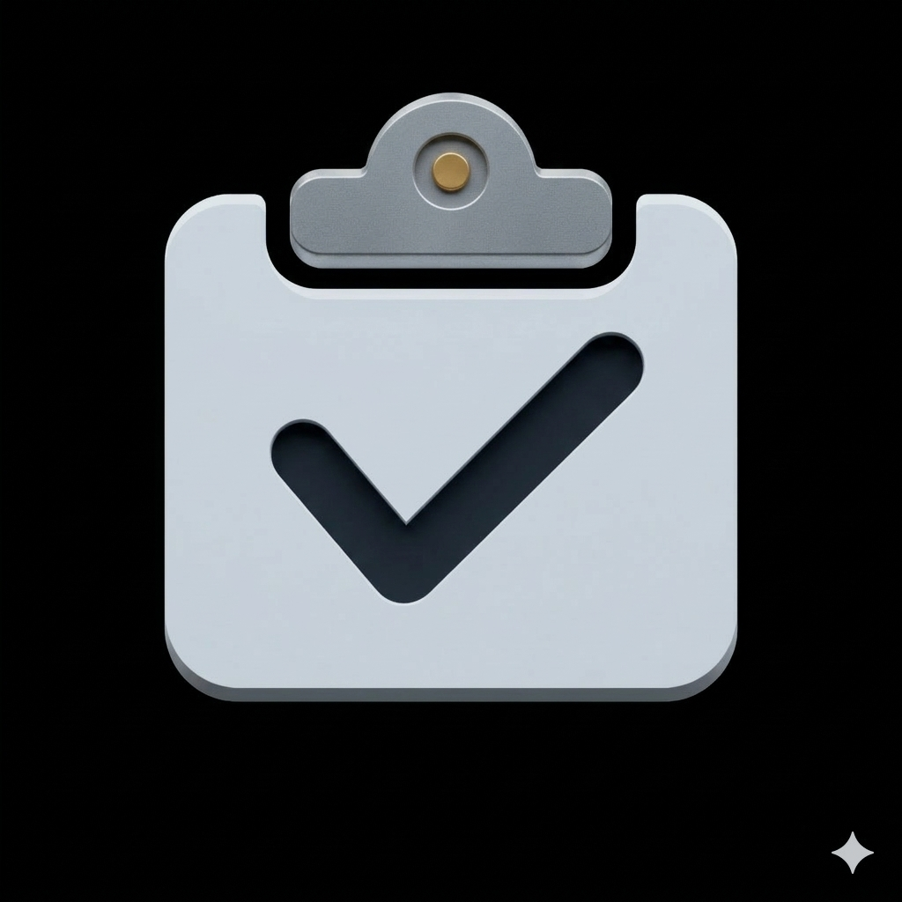
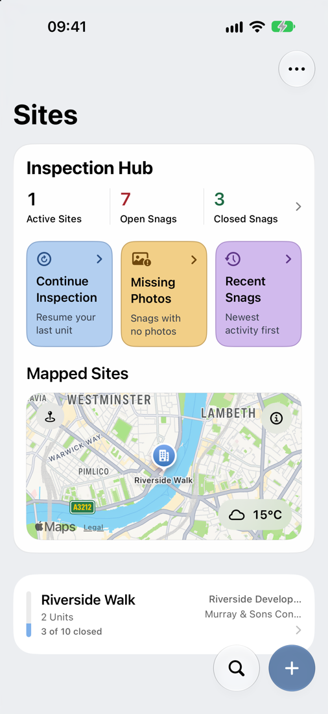

Snaglite User Manual
Snaglite is an iPhone and iPad app for live site inspections. It helps you record, organise, track and report construction defects, or ‘snags’, during inspections.

Snaglite is available on the App Store.

Snaglite workflow:
- Create a site
- Add units
- Add locations
- Record snags with photos, notes, status, priority and assignee
- Pin snags on drawings if you have them
- Review and update snags as work progresses
- Export a PDF report or CSV spreadsheet
Your inspections sync between your iPhone and iPad through iCloud. You can also back them up to a file at any time.
How Snaglite is organised
Snaglite uses a simple hierarchy:
Site → Unit → Location → Snag
- Site is the overall development, scheme or property
- Unit is an individual plot, apartment, house, block or inspection area
- Location is a room, space or sub-area within the unit
- Snag is an individual defect or issue


Manual contents
Before you start
- Enter your company name, logo and inspector name in Settings
- Add the assignees you use regularly
- Export a test PDF report on your device
- Make a backup regularly if your inspection data is important